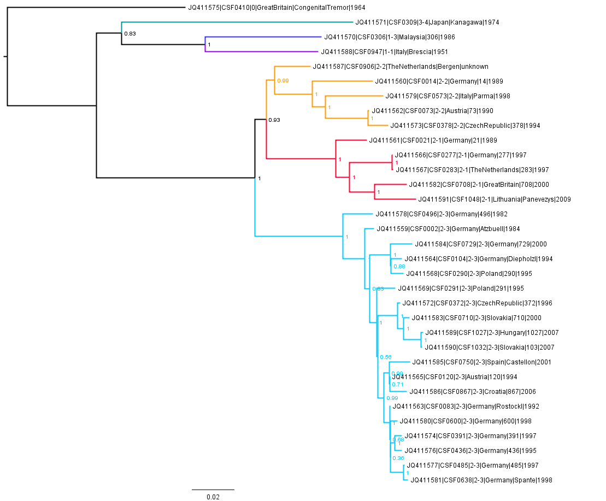

Classical Swine Fever Virus
Genomes
The classical swine fever virus is a Pestivirus, with the same structure as Bovine Viral Diarrhoea and Border Disease Viruses, see http://viralzone.expasy.org/viralzone/all_by_species/39.html
It contains a 5'UTR (untranslated) region, a single open reading frame coding for a poly-protein and a 3'UTR. The constituent proteins of the poly-protein include Npro (the protease) and the E2 surface protein.
There are 109 complete genomes available from GenBank (23 Feb 2017) - fasta sequences - sequence information(tab delimited)
Sequences
Poly-protein
Postel et al used a set of 33 partial poly protein sequences to investigate CSFV phylogeny.
The alignment is 3511 bases long (coding region starts at 178) and contains N-terminal autoprotease Npro, capsid protein C, envelope glycoproteins Erns, E1, E2, and N-terminal part of p7.
Postel et al (2012) "Improved strategy for phylogenetic analysis of classical swine fever virus based on full-length E2 encoding sequences"
Vet Res. 2012 Jun 7;43:50 doi: 10.1186/1297-9716-43-50
Table 1: Reference sequences used in Postel et al, Table 1 with short names
| Region | Number of Sequences | FASTA | NJ Tree | ML Tree |
| Partial PolyProtein | 33 | Sequences | NJ TN93 newick tree | ML GTR newick tree |
Figure 1: Maximum Likelihood Tree (GTR model, 4 gamma rates between sites, 100 bootstraps)
of Reference Sequences in Postel et al in FigTree
Click on the image to zoom
| 33 References | |

| Click to download ML tree in FigTree
| |

{kind=link}